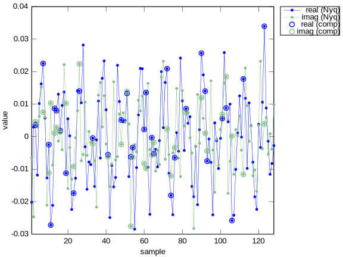

Introduction
Three signals are shown below--- a constant ($x_0$), a line ($x_1 t$)
and a parabola ($x_2 t^2$)---all sampled at $t=-1,0,1$. One
is secretly chosen. With only two samples (any two of red, blue and
green) we cannot be certain of the chosen signal. *Compressed
sensing fails in this case*. Understand this counter example, and
how to fix it, and you've made a significant step towards applying
CS to real-world applications
Coefficients $x_0$, $x_1$ and $x_2$ can be any non-zero values.
The sampling instants ($t=-1$, $t=0$ and $t=1$) are
fixed. Note that the third sampling instant has changed from
[?id=b007z.47, Intuitive Compressed Sensing].
This module
is a bridge between its prerequisite,
CS1, and
real-world applications. While introductory, you will be able to
grasp advanced material and then decide which areas to explore
further. Two important applications are surveyed at the end, and
code to run and modify is provided throughout.
Remedy
The core problem identified by the counter-example is the Lagrange
sensing basis. None of its coordinate planes allow
distinct $\mathcal{SB}$-projections. The remedy is to use a
__new basis__ and form $\mathcal{SB}$-projections on these new
coordinates planes.
For example, consider a new sensing basis with coordinates $b_0^n$,
$b_1^n$, $b_2^n$ found by rotating the Lagrange basis by 45 degrees.
To see the new $\mathcal{SB}$-projections more clearly we
omit the Lagrange axes and align the plot with the new sensing axes.
The new $\mathcal{SB}$-projections, on the $b_0^n/b_2^n$ and
$b_1^n/b_2^n$ planes, are distinct---therefore, the 1-sparse signal
$f(t)$ can be successfully compressed using the coordinates in one
of these planes.
Broadly speaking, everything we learned in CS1 can be applied to the
counter-example providing we consider the $\mathcal{SB}$-projections
in the new basis. In practice we need the help of the
[http://en.wikipedia.org/wiki/Change_of_basis,change of basis] idea
from linear algebra.
Change of Basis
We put sparsity to one side, just for this section.
Say we know the (non-sparse) coordinates of $f(t)$ are
$x=[x_0~x_1~x_2]^T$ according to $\mathcal{B}_N=\{1,t,t^2\}.$ How do
we find the coordinates according to another basis? In particular,
how do we find the coordinates, $b^\ell$, according to the Lagrange
basis?
If we know the Lagrange coordinates (the sample values!) of each
signal of $\mathcal{B}_N=\{1,t,t^2\}$, and we know how much of these
basis signals constitute $f(t)$ ($=x_0+x_1 t + x_2 t^2$), we can
clearly work this out.
This can sound more complex than it is. If we know the Lagrange
coordinates of $1$, $t$ and $t^2$, and we know $f(t)$ is some
linear combination of $1$, $t$ and $t^2$, then we know the
Lagrange coordinates of $f(t)$.
There is an important general pattern here: given the coordinates of
a signal according to a first basis (e.g., $x=[x_0~x_1~x_2]^T$), and
given the coordinates of the first basis according to a second basis
(the sample values of $\mathcal{B}_N=\{1,t,t^2\}$) we can easily
find the coordinates of the signal according to the second basis.
The bookkeeping is straightforward. Let $A^\ell$ be a
*change-of-basis matrix* (COB matrix), whose columns express the
first basis according to the second. Then the two sets of
coordinates are related by $A^\ell x = b^\ell$.
For the counter example the columns of $A^\ell$ are the coordinates
of $\mathcal{B}_N=\{1,t,t^2\}$ (the first basis) according to the
Lagrange basis (the second basis). That is, the columns of $A^\ell$
are the sample values of $\mathcal{B}_N=\{1,t,t^2\}$:
$$
A^\ell=\begin{bmatrix}1&-1&1\\1&0&0\\1&1&1\end{bmatrix}
$$
Therefore, given any coordinates $x$, we can find the Lagrange
coordinates via $A^\ell x = b^\ell$. For example, if $x=[0~0~1]^T$
(a parabola), then $b^\ell=[1~0~1]^T$ (the sample values of a
parabola).
The COB equation $A^\ell x = b^\ell$ holds in general (when one
basis in known according to another), and certainly when $f(t)$ is
sparse. For CS, the interesting thing about the COB equation is
that we find the fundamental CS equation, $Ax=b$, simply by deleting
some of its rows.
CS Equation---Revisited
Plotting the sparsity basis signals according to
their sample values (Lagrange coordinates) is a
visual recipe to
construct one set of basis signals according to another. In a way,
this view is a geometrical representation of the COB matrix
$A^\ell$, which holds the description of one basis in terms of
another in its
columns.
The Lagrange coordinates for each sparsity basis signal can be
read from the plot.
For example, the first column of
$$A^\ell=\begin{bmatrix}1&-1&1\\1&0&0\\1&1&1\end{bmatrix}$$
expresses the constant sparsity basis signal in terms of its
Lagrange coordinates (samples)---and we can identify the
corresponding point in the plot, $ (1,1,1) $.
This correspondence between the plot and the COB matrix $A^\ell$ can
be extended to $\mathcal{SB}$-projections. In the plot a
$\mathcal{SB}$-projection is found by
dropping a coordinate, to imprint the signal on the plane
of the remaining two axes. The corresponding action for the matrix
is to
drop the corresponding row (each row has the coefficients
according to one axis).
The fundamental CS equation, $Ax=b$, can now be derived from the COB
equation simply by dropping some of the rows in $A^\ell x=b^\ell$.
The left-hand side is a combination of $\mathcal{SB}$-projections
(columns of $A$) and the right-hand side is the compressed
coordinated ($b$).
For example, for the counter-example, starting with the COB
equation, the fundamental CS equation is (dropping the blue sample,
and projecting along $b^\ell_1$)
$$
\require{cancel}
\begin{bmatrix}1&-1&1\\
\cancel{1}&\cancel{0}&\cancel{0}\\
1&1&1\end{bmatrix} x
=\begin{bmatrix}1 \\ \cancel{0} \\ 1
\end{bmatrix}
$$
The CS equation is thus a kind of incomplete COB in which we recover
the full coordinates of a signal according to one basis using only
partial knowledge of the signal according to another basis. For the
counter-example, though, this proved impossible using the Lagrange
basis, and we had to change to a new sensing basis. Let's now
consider that remedy from a COB perspective.
Remedy---Revisited
Our view of CS is essentially to prune a COB equation of one or more
rows. However, the counter-example presents us with a COB from
which nothing can be deleted:
$$
A^\ell x =
\begin{bmatrix}1&-1&1\\1&0&0\\1&1&1\end{bmatrix} x
=\begin{bmatrix}1 \\ 0 \\ 1 \end{bmatrix}
= b^\ell
$$
To confirm this, consider computing $\mathrm{spark}(A)$---forming
$A$ by deleting each row of $A^\ell$ in turn:
Since, for 1-sparse ($K=1$) signals we require a spark of $2K+1=3$,
this confirms CS is not possible. We cannot remove any rows from
the COB equation to form a CS equation we can uniquely solve (i.e.,
with $\mathrm{spark}(A)=3$). The fix is to change from the Lagrange
basis to a better sensing basis. Consider a second COB matrix,
$$
R =
\begin{bmatrix}
\cos\theta&-\sin\theta&0\\
\sin\theta&\cos\theta&0\\
0&0&1
\end{bmatrix}
$$
Here $R$ is a rotation to match the remedy above---but a more
general COB is fine. Applying $R$ to the Lagrange coordinates
(i.e., to the COB equation $A^\ell x = b^\ell$)
$$
R A^\ell x = R b^\ell
$$
Letting $A^n=RA^\ell$ and $b^n=Rb^\ell$ ("$n$" for new) we have the
familiar COB form of $A^n x = b^n$. A uniquely solvable CS equation
can be formed by dropping rows from $A^n$ and $b^n$, which we can
check by checking the spark:
Thus, CS is possible by deleting either the first or second rows of
the new COB equation. This means---in the *new* coordinates---the
constant, line and parabola can be recovered without either the
first or second coefficients, but not without the third coefficient.
Note that the new coordinates are not the red, blue and green
coordinates of the Lagrange basis ($b^\ell$), but $b^n=R b^\ell$---a
__linear combination__ of the Lagrange coordinates. For example,
consider $R$ above:
The first coordinate in the new basis is the scaled difference of
the first (red) and second (blue) sample values. The second new
coordinate is a scaled sum of the red and blue samples, and the
final new coordinate is equal to the green sample value. Observing
such linear combinations of the sample values are sometimes
considered "sensing" the signal---which is why "compressed sensing"
is sometimes preferred over "compressed sampling".
We have made considerable profit from the COB view of CS---but the
best part (at least for applications) is in the next section. *The
discrete Fourier transform is a COB*.
Discrete Fourier Transform
So far we have studied CS in terms of polynomials and changes of
basis. While simple, these
[http://en.wikipedia.org/wiki/Toy_problem,toy problems] are much
closer to real applications than they appear---because the discrete
Fourier transform
([http://en.wikipedia.org/wiki/Discrete_Fourier_transform,DFT]) is a
*polynomial change of basis*.
To see this, consider that the (inverse) DFT of a signal $g(t)$ is a
[http://en.wikipedia.org/wiki/Trigonometric_polynomial,polynomial]
evaluated at sampling points $t_n=\exp(i2\pi n/N)$. We identify the
sample values as the Lagrange coordinates,
$b^\ell=[g_0,...,g_{N-1}]^T$, and the spectrum as the polynomial
coefficients $x=[G_0,...,G_{N-1}]^T$. The important idea is that
there is only *one* signal ($g(t)$) which has *two* sets of
coordinates, and the DFT is a recipe for moving between the two
representations.
If $x$ is sparse (say when $g(t)$ is bandlimited) then
$\mathcal{B}_N$ is a sparsity basis, as above. The columns of the
COB matrix (from the sparsity basis to the Lagrange basis) are the
sample values of the sparsity basis signals (i.e., the coefficients
of the sparsity basis according to the Lagrange basis). That is
$A^\ell_{kn}=\exp(i 2 \pi k n / N)$---which is the inverse DFT
matrix. Thus, the inverse DFT matrix (and the DFT matrix) are COB
matrices that relate expressions of a signal in the time and
frequency domains.
Before we consider applications of CS with the DFT there are
practicalities to consider. In a noisy system (i.e., in *all* real
systems), some changes of basis are better than others.
Mutual Coherence & Noise
Our remedy for the counter-example found new, distinct
$\mathcal{SB}$-projections by rotating the Lagrange axes by
$\theta=45$ degrees. But, why choose $\theta=45$ degrees when
$\theta=10^{-6}$ degrees would suffice? The answer is that, in a
practical system, noise redefines what "distinct" means. If the
difference between two $\mathcal{SB}$-projections is less than the
noise level, they will be difficult to distinguish. However, beyond
simply mistaking one signal from another, there is a more insidious
problem with the combination of small $\theta$ and noise.
Reconstructing a signal from its compressed samples amounts to
finding the the linear combination of $\mathcal{SB}$-projections
that best explain the data. If the $\mathcal{SB}$-projections very
nearly have the same direction (i.e., small $\theta$ in our
counter-example) then that linear combination will be sensitive to
errors in the data (from noise say).
For example,
say that our signal has compressed sample values (Lagrange
coordinates) $b=\begin{bmatrix}2&2\end{bmatrix}^T$ and two
$\mathcal{SB}$-projections are $a_1=[1.01~1]^T$ and
$a_2=[0.99~1]^T$. Obviously
$x=\begin{bmatrix}1&1\end{bmatrix}^T$---i.e., $b=a_1+a_2$. *But*,
if we perturb $b$ by just $n=\begin{bmatrix}0.1&-0.1\end{bmatrix}^T$
the combination is $x'=\begin{bmatrix}10.95&-9.05\end{bmatrix}^T$!
This is the idea of the
[http://en.wikipedia.org/wiki/Condition_number,condition number] of
a linear system, and we cannot escape it in CS. Since CS systems
are not square we cannot compute a condition number, but the idea of
[?id=cb006p.49,mutual coherence] (MC) serves as similar role. The
MC of a set of $\mathcal{SB}$-projections is the cosine of the
minimum angle between any two $\mathcal{SB}$-projections. In matrix
terms, the cosine of the minimum angle between any two columns of
$A$. In the next section, the last before we consider applications,
we consider how matrix $A$ can effectively be formed in
real-world-scale problems.
Scale & Randomness
So far, we have considered small problems that are easy to
visualize. The polynomial riddle and counter-example have 1-sparse
signals ($K=1$), with two samples after compression ($M=2$), in a
three dimensional signal space ($N=3$). On the other hand, the first
paper we review below has $N\approx 65000$, $M\approx 3500$ and $K
\approx 6500$.
Even so, solving a larger problem in linear algebra ($Ax=b$) is not,
in itself, fundamentally different. The tricky question is, how do
we find a large set of $\mathcal{SB}$-projections with good mutual
coherence? Equivalently, how do we choose the matrix $A$ in the CS
equation $Ax=b$?
For large problems it may not be feasible to individually choose the
sampling instants (as for the riddle) or linear combinations of the
sample values (as for the counter-example). The (perhaps surprising)
solution is that good results are achieved when the sampling
instants or linear combinations are chosen *randomly*.
To roughly grasp this idea imagine forming the new sensing basis
from the Lagrange basis via some __random__ rotation in all three
axes. Then, intuitively, __almost always__ the
$\mathcal{SB}$-projections will be distinct. Only rarely (almost
impossibly rarely) will the random sensing basis not produce
distinct $\mathcal{SB}$-projections. In the next section we
consider two CS applications The first paper randomly choose
sampling instants and the second paper randomly combines sample
values.
Examples
Below we consider two relatively recent, but well-known, journal
papers---each of which details an application of CS. Although both
employ material beyond our tutorial scope we can still
appreciate---and compute---their main results. While neither paper
considers the COB view of CS directly, it is relatively easy to
recalibrate their different perspectives.
Our first example aligns with the polynomial riddle from CS1, in the
sense that the compressed coordinates, $b$, contain the sample
values of the signal at selected, non-uniform instants. The second
example is like the counter-example, where the sampling is uniform,
and the compressed coordinates are linear combinations of the sample
values.
Consider a (large) DFT described in COB form as $A^\ell x = b^\ell$.
We know a solvable CS equation may be found by deleting selected
rows from $A^\ell$ and $b^\ell$. The core idea of
[1] is that rows are
__randomly deleted__. That is, that samples (Lagrange
coefficients) of a sufficiently sparse signal can be randomly
gathered, at a relatively low rate, and yet still allow full
reconstruction of the signal.
Deleting rows randomly from a DFT (or inverse DFT) matrix yields a
[http://scholar.google.com/scholar?q=%22partial+fourier+matrix%22,
partial Fourier matrix], and is one of the classic ideas of CS.
See, for example, the paper by
[http://arxiv.org/pdf/math/0410542.pdf,Candes and Tao] (The
version published by IEEE Transactions on Information Theory has
been cited many hundreds of times).
The hardware in [1] is
audacious---with
multi-GHz sampling and signal processing, and a goal of discounting
the Nyquist rate by more than an order of magnitude. One
interesting feature is that, since the DFT is defined over a
uniformly spaced "grid" of sample times, the retained samples are
always "on-grid". This allows effectively random (if not truly
random) sampling times using a conventional clock. A second feature
is that, while a signal is "analog"-sampled for every tick of the
sampling clock (via a "hold" circuit), these values are only
"digitally"-sampled (with a ADC) at the retained samples. This is a
significant advantage in systems where the analog-to-digital
conversion is a severe constraint.
It should be noted, though, that the power consumption is
__extremely__ high. Though we shouldn't read overly into this
metric, or judge the device out of context, if you are considering
applying CS power consumption should be considered as a priority.
In [1] the COB
matrix $A^\ell$ has approximately $N=65000$ rows and columns. From
these $N$ rows approximately $M=3500$ rows of $A^\ell$ and $b^\ell$
are retained (i.e., from a potential block of 65000 Nyquist rate
samples, only 3500 are converted to digital form).
The sparsity is
approximately 10% of the maximum bandwidth allowable with Nyquist
sampling. Computing a problem of this scale requires more
processing power that we care to allocate here, but a more
moderate sized problem will suffice for illustration:
Remember, knowing a signal is sparse according to a basis does not
mean we know *which* coefficients are non-zero. Therefore, we do
not assume that we know the frequencies at which the signal has
power.
Thus, of $N=128$ possible complex tones our signal has only $K=5$
that are non-zero. Further, the signal will be compressed to 32
samples. To begin we pick $K=5$ tone frequencies,
set their magnitudes to
unity, and assign each a random phase (as
in [1]).
We pick unit amplitudes and random phases only because it makes
the presentation easier.
The COB matrix, $A^\ell$ is an inverse DFT matrix with $N$ rows and
columns. The Nyquist-rate samples are $b^\ell=A^\ell x$:
For CS we now compress $b^\ell$ by randomly selecting $M$ of its
rows, and, for reconstruction later, we form matrix $A$ from the
corresponding rows of $A^\ell$:
The plot below shows the Nyquist rate samples (dots) and the
randomly selected compressed samples (circles).

Finally, given the $M$ samples of $b$, we are left to solve $Ax=b$
to recover the original signal (i.e., sparsity coordinates $x$). We
use the [?id=b007h,Iteratively Reweighted Least Squares] method:
The plot below shows the original and recovered sparsity coordinates
on the perimeter of a unit circle (recall the original tone
amplitudes had unit magnitude and randomly selected phase). The
points at the origin correspond to the tones with zero amplitude
(or, more realistically, very small amplitude).

Random Demodulator
We generalize
[2], in
a minor way, to reflect its similarity to a
CDMA receiver. The
main difference with our treatment is the COB perspective, which
links [2] with our discussion above, and
with [?id=b007z.43,CS1]. Further details (including code and
computation) can be found in [?id=b007g,another module], but the
basic system is shown below.
As below, a basic
[http://en.wikipedia.org/wiki/Code_division_multiple_access,CDMA]
recevier first "despreads" with a pseudo-noise "long code", then
"covers" the despread signal with various Walsh "short codes" to
separate data channels.
Pseudorandom
Number
Generator
"rd.png"
Consider a signal, $s(t)$, periodic on a
one second
interval. Say $s(t)$ is bandlimited to $N/2$ Hz, so that the Nyquist
frequency is $N$ Hz (and there are $N$ Nyquist samples within the
one second interval). Furthermore, assume that $s(t)$ contains $K$
tones with random frequencies and phases. Our goal is to reduce the
Nyquist rate by a factor of $R$.
The system diagram
shows $s(t)$ entering the "Random Demodulator" system which
progressively:
- flat-top
samples $s(t)$ at a rate of $N$ Hz to find $f(t)$;
- synchronously multiplies by a pseudo-random signal, $p(t)$;
- further synchronously multiplies ("covers") with periodically
repeated Walsh codes $W_1(t),...,W_N(t)$ to form $N$ paths;
- integrates $M$ samples then resets (i.e.,
integrates & dumps
(I&D) );
- samples at a rate $M=N/R$ Hz;
- finally, chooses a
single Walsh path.
One se cond is used in
[2]
for simplicity, but the results can easily be renormalized to any
interval.
To be consistent with the notation used above we have changed from
that used in
[2].
"Integrate and dump" means that a signal is integrated for a fixed
period, then the integrator is reset to zero, before continuing to
integrate the signal.
[2].
Flat-top sampling is *not* part of [2], where it is noted
that the signal can be averaged over intervals of the Nyquist rate
without much effect. Here we make the signal constant for each
Nyquist interval to simplify the presentation.
That is, a family of outputs that derive from a single Walsh code.
A combination of paths __could__ be used, but that would require
more hardware to implement.
Next we examine the matrix representation of each step, and show how
the system can be viewed as several changes of basis---similar to
the counter example.
Our starting point is the
DFT/COB, $A^\ell x =
b^\ell$, where $b^\ell$ are the values of the flat-top samples. As
before, $x$ is the frequency spectrum of the signal, which is known
to be sparse (at unknown frequencies). Although $x$ does not appear
directly in the system diagram, it may help to imagine that it is
the view of signal $b^\ell$ seen through the "prism" of $A^\ell$. As
we progress through the system, we augment $A^\ell x = b^\ell$ to
indicate changes on the system diagram (on the right-hand side), and
also equivalent changes to the prism (on the left-hand side).
If you are familiar with electronic systems, we imagine both a
time-domain (oscilloscope) view of the signal ($b^\ell$) and a
frequency-domain (spectrum analyzer).
In computations we will actually use a discrete __sine__
transform, DST (but leave code for the DFT commented). With the
DST the computation is entirely real, and we can demonstrate the
well-known [?id=b004d,$\ell_1$-magic] code.
Our goal is to represent $f(t)$ with $M=N/R$ samples. Obviously we
cannot simply retain every $M^\mathrm{th}$ Nyquist sample---which is
just plain undersampling. In COB terms, retaining every
$M^\mathrm{th}$ row from $A^\ell x =b^\ell$ won't produce an $Ax=b$
that we can solve. The answer, as with the counter-example, is to
apply a further COB before we omit rows. By and large, the system of
[2] is a
hardware implementation of such as COB.
Consider a diagonal COB matrix $A^p$ using the values of $p(t)$.
$$
A^p=
\begin{bmatrix}
\pm 1 \\
& \pm 1 \\
& & \ddots \\
& & & \pm 1
\end{bmatrix}
$$
Multiplication by $A_p$ is equivalent to step 2 above, and
reminscent of the long
PN-code in CDMA. Applying this COB we find $$ A^p A^\ell x =
A^p b^\ell $$
For example, say $b^\ell$ is consists of 12 samples, each equal to
unity. After multiplying with $A^p$ we find:
However, in a CDMA system the signal is "spread" by the __same__
PN code at the transmitter.
Steps 3, 4 and 5 are equivalent to applying a COB $A^w$---which is
easiest to illustrate via example. Say $R=4$, and the Walsh codes
and I&D period have length $R$. Then, for every four samples that go
into step 3, one sample comes out of step 5.
In matrix terms, consider now the the all-ones Walsh code $W_1$ of
length 4, cyclically repeated in a matrix:
When multiplying a signal by this matrix, the first row sums the
first four sample values of the signal. The second and third rows
sum the next two groups of four samples in the signal
respectively. Thus, this matrix generates the three samples leaving
step 5 for the first Walsh path, given the 12 samples entering step
3. If we extend the above matrix with the remaining three Walsh
codes we have $A^w$:
Applying $A^w$ to our existing system equation, we find
$$
A^w A^p A^\ell x=A^w A^p b^\ell
$$
In terms of the system diagram, we have split the signal into four
paths, each generating samples at one quarter of the Nyquist
rate. In moving from the COB equation to the CS equation $Ax=b$ we
omit the rows that aren't required to reconstruct the signal---this
is equivalent to choosing a single path in the system diagram. For
implementation it is sensible to select the $M$ rows corresponding
to the all-ones Walsh code (since that amounts to doing nothing),
and that is the system presented in
[2].
Let's now consider a computational example, starting first by
compressing a signal, and then finally recovering it from a
sub-Nyquist number of samples. In Octave:
The upper part of the first plot shows the Nyquist samples, $b^\ell=
A^\ell x$ in blue and the signal after random spreading by $p(t)$
(i.e., $A^p A^\ell x = A^p b$) in green. The lower part of the first
plot shows the signal after multiplication by $A^w$ (in red), and
then the compressed values obtained by selecting the first Walsh
path (in magenta).
It remains to recover the original signal from its compressed
samples. As ever, the CS problem is encapsulated by an
underdetermined linear system, $Ax=b$. In place of IRLS, here we use
the well-known [?id=b004d,$\ell_1$-magic] code, and then plot the
sparse input coordinates, and the recovered output coordinates.
Conclusion
We wrote this module because there seemed little between
[http://www.wired.com/magazine/2010/02/ff_algorithm,popular
accounts] of CS and hard-core research literature---particularly for
those with our kinds of background. Namely, engineers and
scientists who are not afraid of a little math, but need good
reasons for committing significant time to a topic. Basically, we
want to understand CS well enough to determine whether it will be
useful in our main areas of focus. For that we need an intuitive
grasp of the fundamentals. We found the fundamental aspects of CS
most clear when viewed through the prism of a change-of-basis.
Moreover, it places CS in the
[http://videolectures.net/mit1806s05_strang_lec31/,same context] as
other compression technologies. We stress that this is not a novel
idea, but rather an idea that we could not find usefully resolved
elsewhere. In summary then, CS is a kind of incomplete change of
basis. A signal according to one basis is known to have sparse
coordinates, and if we choose the second basis carefully, not all
its coordinates are required to reconstruct the signal.